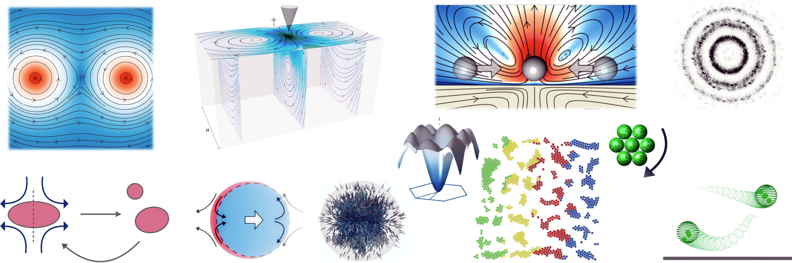

Homepage
Group
Publications
Research
Software
Teaching
About
Rajesh Singh is a faculty member in the Department of Physics at the Indian Institute of Technology (IIT) Madras. His research interests are in the field of theoretical soft condensed matter physics. With this principal theme, his group uses tools from statistical mechanics, fluid mechanics, computational physics, and machine learning to study the physics of soft, active, and living materials.
He completed his Ph.D. at the Institute of Mathematical Sciences, Chennai, in 2018. Following his graduation, he was awarded a Newton International Fellowship, which enabled him to conduct his postdoctoral research at the University of Cambridge. In 2021, Dr. Singh joined the Department of Physics at IIT Madras.
IITM Page
|
ResearchGate
|
Google Scholar
|
GitHub
|

Scientific positions and education
Since 21
Assistant Professor, Department of Physics, IIT Madras, Chennai
2018-21
Postdoctoral research associate, DAMTP, University of Cambridge
2012-18
PhD, The Institute of Mathematical Sciences, Chennai
2010-12
MSc, Indian Institute of Technology Kanpur
2007-10
BSc, Hindu College, University of Delhi
Contact
Rajesh Singh
Assistant Professor
Department of Physics
IIT Madras, Chennai, India